Sistema informático que permite administrar recursos: humanos, financiero - contable, productivos, logísticos, entre otros.
Sus principales características son:
✅Incorpora mejores prácticas del mercado que facilitan la optimización de los procesos del negocio.
✅Garantiza la integridad de procesos (de acuerdo a las reglas de negocio).
✅Maneja grandes volúmenes de información, manteniendo la identidad de la empresa.
Configuración general del sistema
En Vanti el sistema SAP está conformado por dos grandes soluciones:
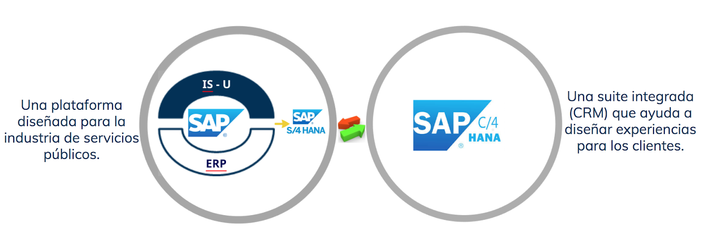
Se compone de dos plataformas "SAP IS U" y "SAP ERP", las cuales a su vez están integradas de la siguiente manera:
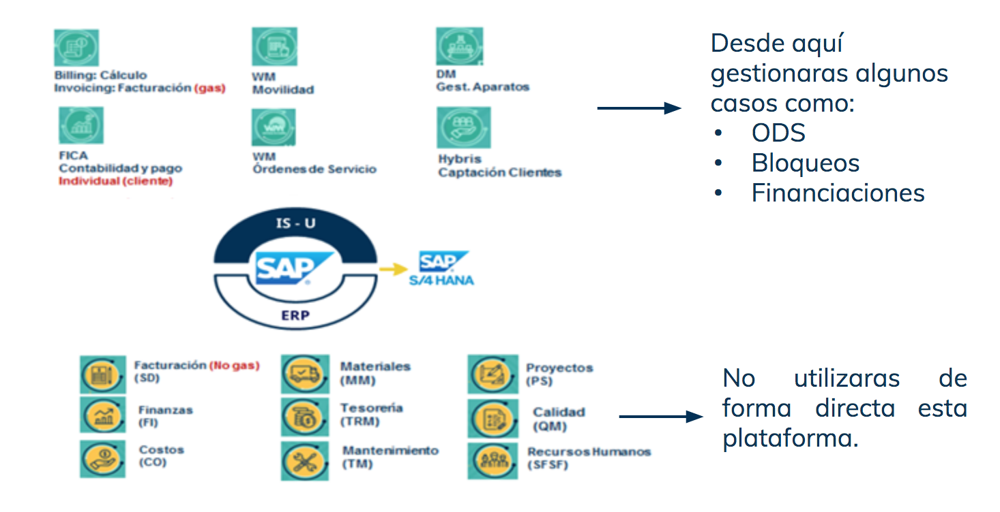
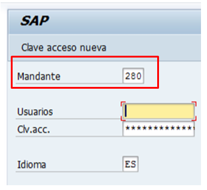
A continuación, se observan los códigos de los mandates que se usan en SAP
Matchcode / Ayuda de búsqueda:
Herramienta de consulta que se emplea para la búsqueda de determinados datos (registros) y conceptos (nombre, ciudad, etc.).
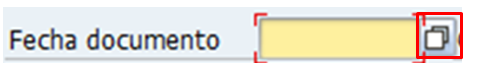
Barra de botones
Ayuda a la gestión y navegabilidad en el aplicativo.
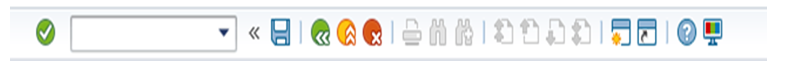
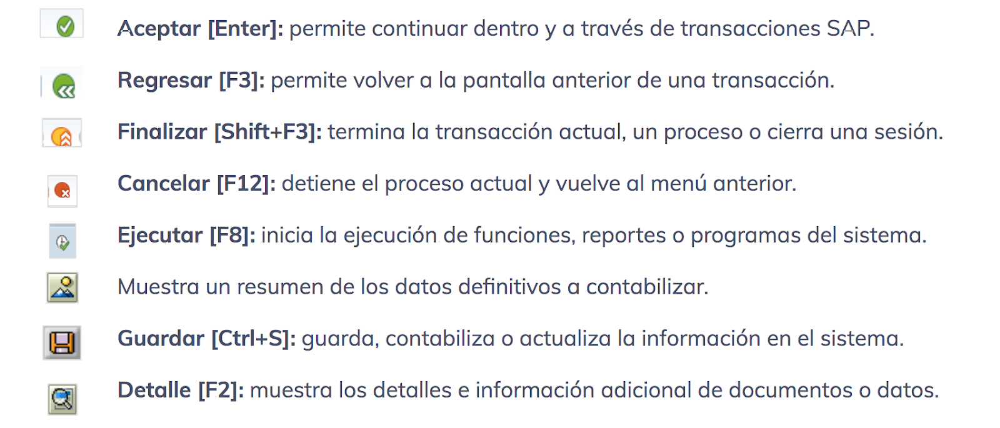
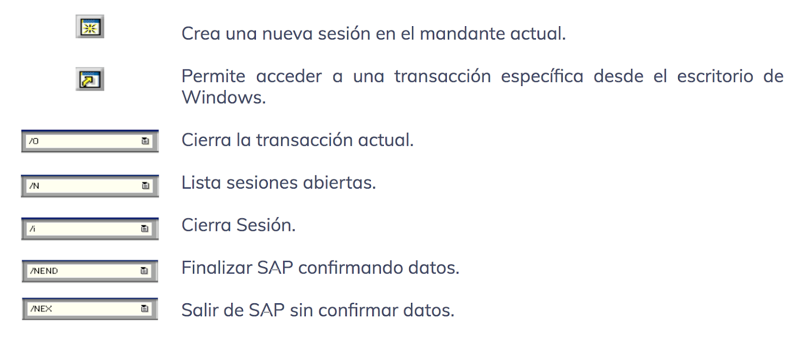
Navegación en S4HANA
Para el acceso a la aplicación, se deberá dar clic en el siguiente icono, ubicado en el escritorio del computador
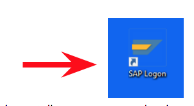
En la pantalla que aparece, selecciona el entorno.

Visualizarás el entorno escogido, luego Ingresa los datos de mandante, usuario y contraseña, y presiona "Enter".

Aparecerá la siguiente pantalla desde la cual podrás navegar en la aplicación
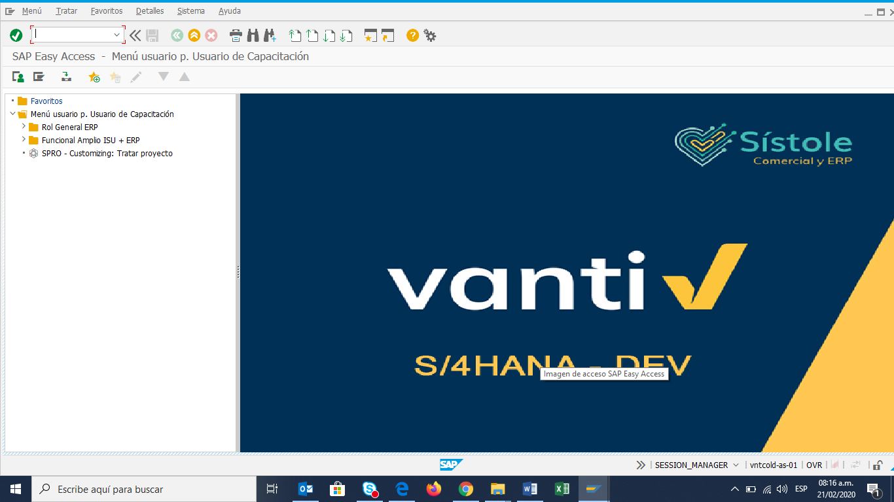
Menú:
Se muestra el menú principal de S4HANA, en él se encuentra el árbol de transacciones que se podrán ejecutar.
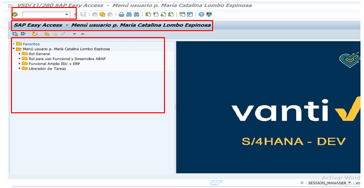
Es una novedosa suite integrada que ayuda a las empresas a diseñar experiencias para sus clientes.
¿Por qué el nombre?
C = Clientes
4 = CRM de cuarta generación
HANA = Representa las relaciones entre la nube, las bases de datos y los servicios.
¿Cómo se compone?
Está compuesta por los siguientes módulos de servicios:
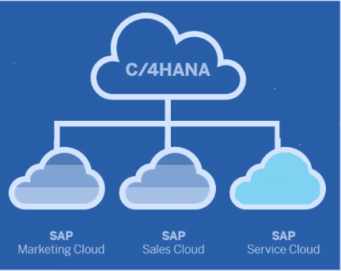
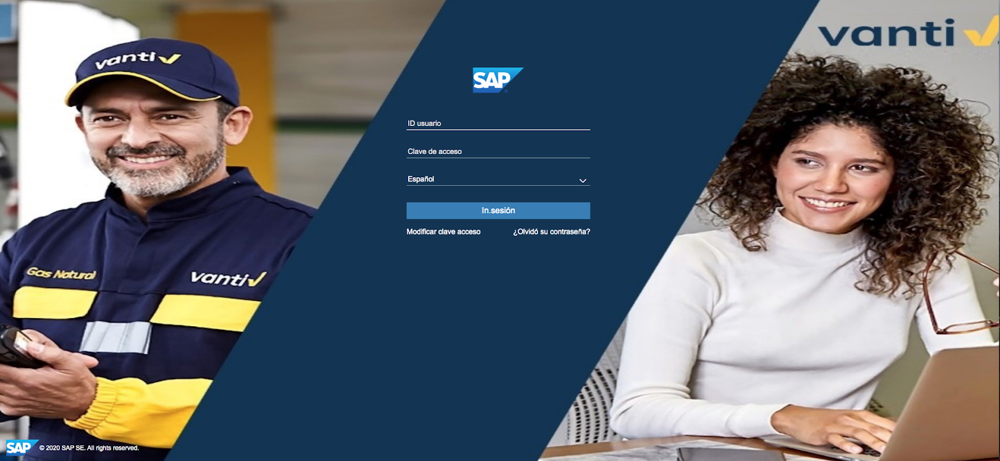
En la plataforma se podrán encontrar:
✅SAP Tickets
✅SAP Clientes
✅SAP Vista 360
✅SAP Oportunidades
✅SAP Pedidos
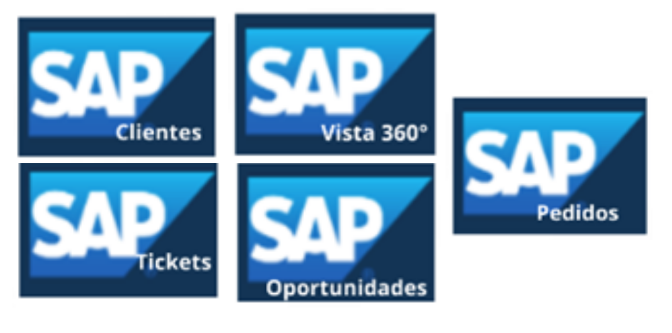
La "Pantalla principal" se visualizará de la siguiente manera:
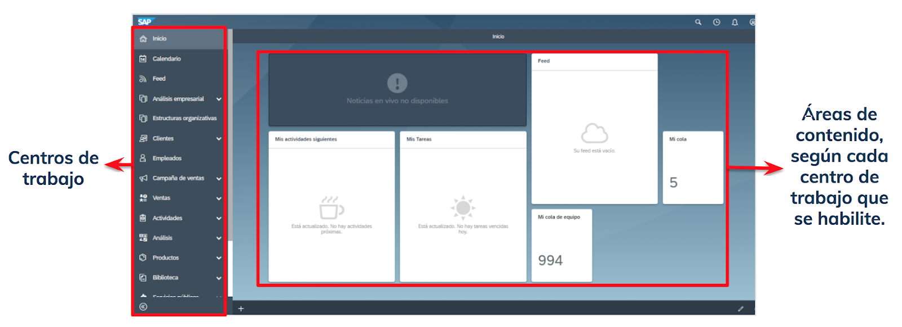
Desde esta opción se podrán crear, consultar y actualizar las diferentes PQRS de nuestros clientes.
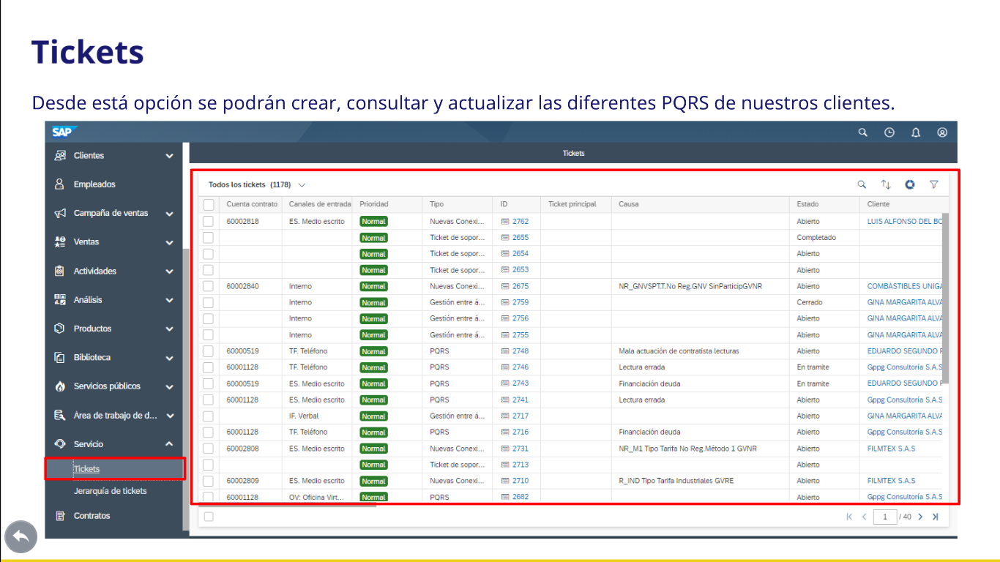
Se podrán radicar así:
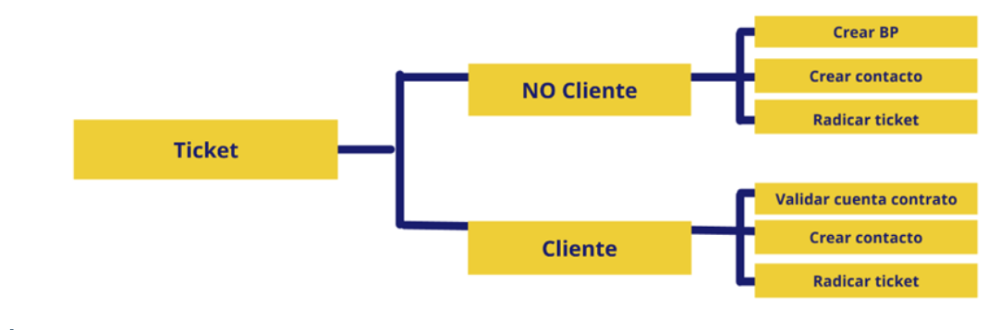
Los tipos de tickets existentes son
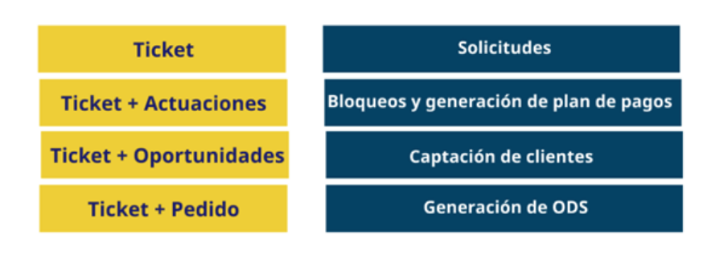
Se podrán clasificar así:
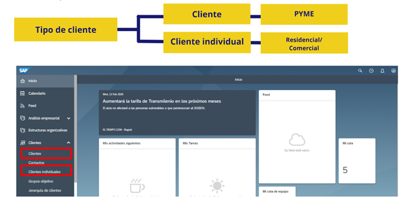
Permite obtener la vista en general de una cuenta contrato:
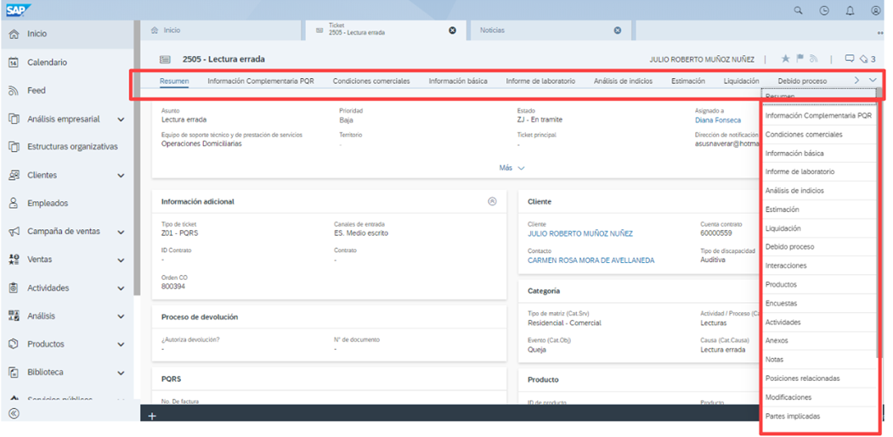